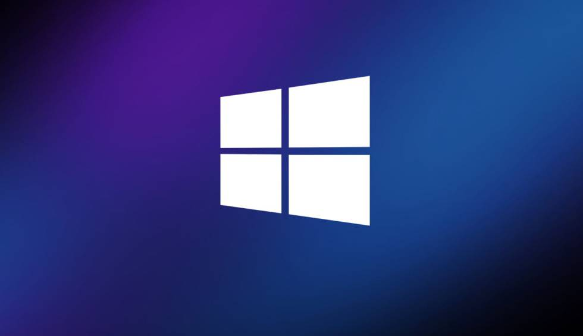

Optimización de PC (reinstalación de Windows y config BIOS) $ 25 y $35 usd
Con mi servicio de ajustes de $25 y $35 usd, modificó su PC para obtener el maximo potencial y alcanzar FPS más altos, latencia más baja del sistema, retardo de entrada más bajo, menor ping y hacer que su juego sea más fluido en general, desde optimizar su sistema operativo Windows hasta optimizar el BIOS y lograr el máximo rendimiento mientras garantizo la estabilidad del sistema.
Diagnóstico de rendimiento de PC - $ 15 usd
Si tiene problemas con su PC, ya sea una pantalla azul constante, una falta de FPS, microcortes que afectan su juego, fallas del juego etc. Puedo asegurarme de encontrar el problema y solucionarlo si es posible, o darle la recomendación de algo que deba comprar para obtener los resultados deseados. Si se requiere un restablecimiento de fábrica, le permitiré pagar la diferencia de $5 en lugar de comprar ambos.